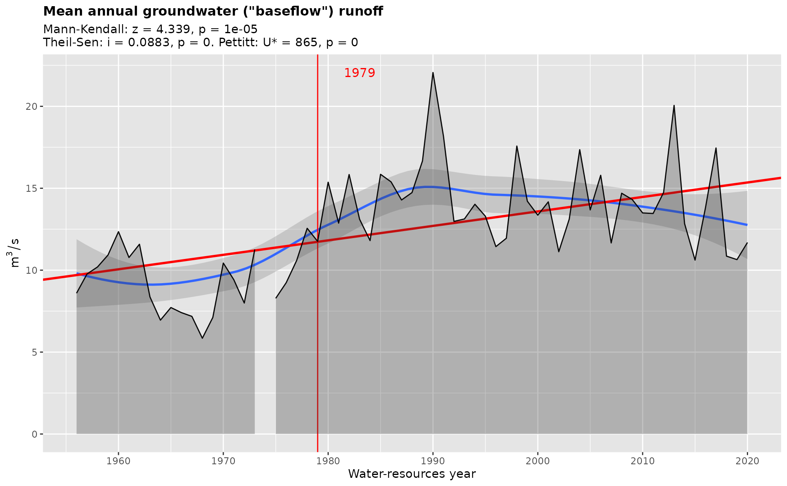

Use this function to get meaningful summary statistics for hydrograph separation. Resulting variables are described by gr_help_vars(). This function is a convenient wrapper around dplyr's df %>% group_by %>% summarize idiom.
Arguments
- df
data.frameof hydrograph separation resulting fromgr_separate()function
Examples
library(grwat)
data(spas) # example Spas-Zagorye data is included with grwat package
# separate
sep = gr_separate(spas, params = gr_get_params(reg = 'Midplain'))
#> grwat: data frame is correct
#> grwat: parameters list and types are OK
# summarize
vars = gr_summarize(sep)
#> Warning: no non-missing arguments to min; returning Inf
#> Warning: no non-missing arguments to min; returning Inf
#> Warning: no non-missing arguments to max; returning -Inf
#> Warning: no non-missing arguments to max; returning -Inf
#> Warning: no non-missing arguments to min; returning Inf
head(vars)
#> # A tibble: 6 × 57
#> Year Year1 Year2 datestart datepolend PolProd Qy Qmax datemax Qygr
#> <int> <int> <dbl> <date> <date> <int> <dbl> <dbl> <date> <dbl>
#> 1 1956 1956 1957 1956-04-14 1956-05-05 21 18.5 467 1956-04-22 8.44
#> 2 1957 1957 1958 1957-03-28 1957-05-22 55 20.3 460 1957-04-08 9.33
#> 3 1958 1958 1959 1958-04-04 1958-05-31 57 27.4 537 1958-04-21 9.90
#> 4 1959 1959 1960 1959-03-28 1959-04-27 30 27.1 406 1959-04-16 10.6
#> 5 1960 1960 1961 1960-03-27 1960-04-26 30 29.4 406 1960-04-15 12.0
#> 6 1961 1961 1962 1961-03-11 1961-05-08 58 18.7 296 1961-04-10 10.5
#> # … with 47 more variables: Qmmsummer <dbl>, monmmsummer <date>, Qmmwin <dbl>,
#> # nommwin <date>, Q30s <dbl>, date30s1 <date>, date30s2 <date>, Q30w <dbl>,
#> # date30w1 <date>, date30w2 <date>, Q10s <dbl>, date10s1 <date>,
#> # date10s2 <date>, Q10w <dbl>, date10w1 <date>, date10w2 <date>, Q5s <dbl>,
#> # date5s1 <date>, date5s2 <date>, Q5w <dbl>, date5w1 <date>, date5w2 <date>,
#> # Wy <dbl>, Wgr <dbl>, Wpol2 <dbl>, Wpol1 <dbl>, Wpol3 <dbl>, Wpavs2 <dbl>,
#> # Wpavs1 <dbl>, Wpavthaw2 <dbl>, Wpavthaw1 <dbl>, WgrS <dbl>, WS <dbl>, …
gr_plot_vars(vars, Qygr, tests = TRUE)
